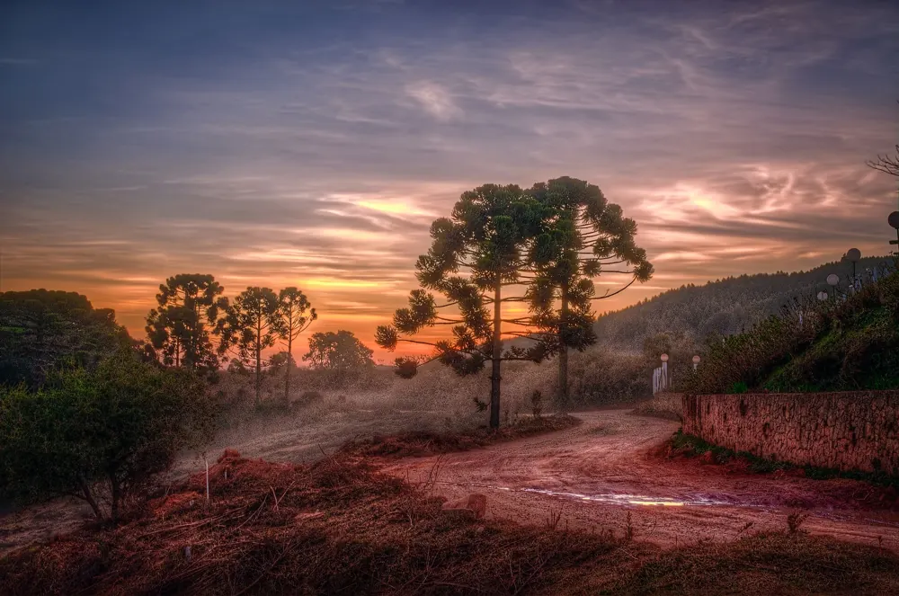
Monte Verde
Distrito de Camanducaia, a uns 30 km da pousada. Tem chalés, restaurantes de fondue, lojas de chocolate e muita araucária.
Foto: Rafael Vianna Croffi, CC BY 2.0Fica na entrada de Camanducaia, de frente para o portal da cidade, perto do comércio e na saída para Monte Verde. Para quem viaja pela Fernão Dias, é uma parada fácil.
Notas e trechos de avaliações deixadas no Google e no Booking.com.
4,7de 5
84 avaliações de 5 estrelas no Google. 94 das 102 têm 4 ou 5 estrelas.
9,3de 10
Fantástico no Booking.com, em 48 avaliações.
Era tarde da noite, estava chovendo bastante e fazendo muito frio. Havíamos chegado de uma viagem longa e cansativa de São Paulo e procurávamos um lugar. O chuveiro e os quartos são tão bem aquecidos, que ficamos muito tranquilos.
Acomodação bem pertinho do centro, em frente ao portal da cidade! A hospitalidade da equipe é fora de série e nos deixaram muito a vontade!
Os proprietários, pessoas agradáveis e de boa índole, interagem e contam histórias da cidade e o convívio fica ainda mais harmonioso.
Fiquei na suíte 8 e estava tudo muito limpo e aconchegante. … A pousada fica muito bem localizada na entrada da cidade, de frente ao portal. Em breve vou voltar à Camanducaia e já sei onde ficar.
Ótima recepção, quartos aconchegantes, cama limpinha e organizada. Tudo preparado para o frio. Café da manhã caprichado.
… uma excelente base para visitar Monte Verde. Muito central, barata e confortável.
… café da manhã tudo fresquinho e feito na hora, pão de queijo, pão de sal tudo quentinho, preço justo.
A Gislaine proprietária e seu filho o Nikolas são pessoas fantásticas que cuidam dos hóspedes como se fossem família …
A simpatia e acolhimento da proprietária. A localização. A limpeza.
O vô tinha uma fazenda e, nela, um engenho de moer cana. Ninguém pensava em vender nada: a garapa era da casa, servida a quem estivesse por perto, ainda espumando no copo.
Da fazenda para cá, o engenho veio junto. Hoje ele fica na porta da pousada, e é a primeira coisa que você vê quando chega. Foi ele que deu nome à casa, e é ele que está desenhado no nosso logotipo.
Camanducaia também nasceu de uma estrada. No século XVIII, os bandeirantes que saíam de Atibaia atrás de ouro passavam por aqui, e foi nesse caminho que surgiram as primeiras casas. O nome vem do tupi e, pela explicação mais aceita, quer dizer "feijão queimado". A cidade já se chamou Jaguary e só voltou a ser Camanducaia em 1925.
Serra acima, um imigrante da Letônia, Verner Grinberg, transformou uma fazenda isolada na vila que hoje é Monte Verde, distrito da cidade.
A estrada continua passando pela porta. Agora ela se chama Fernão Dias, e quem vem por ela encontra o portal da cidade, o engenho do vô e um quarto pronto para descansar.
Romeiros a pé, de bicicleta ou de moto, excursões, trilheiros e jipeiros: temos quartos com beliche e lugar na varanda para guardar bicicletas e motos. Mande pelo WhatsApp as datas e quantas pessoas vêm, e a gente vê como dividir os quartos.
Combinar pelo WhatsApp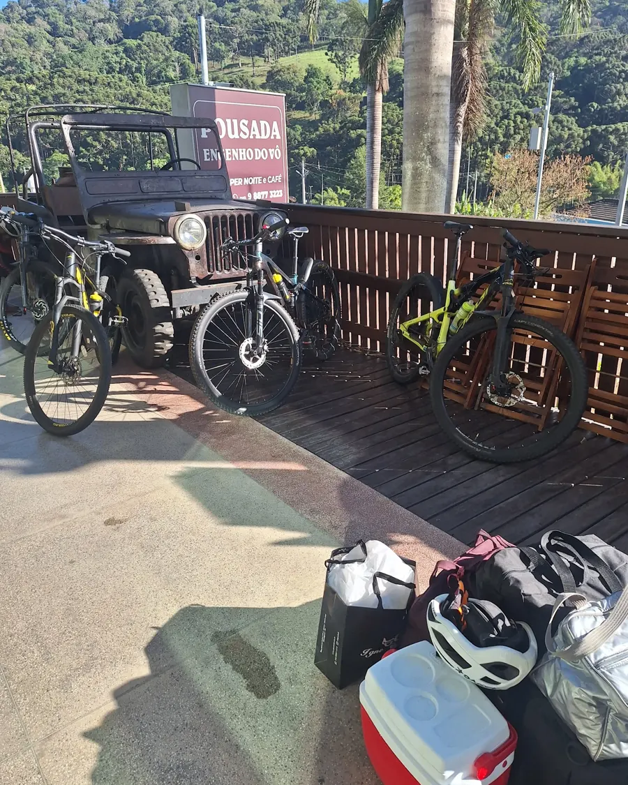
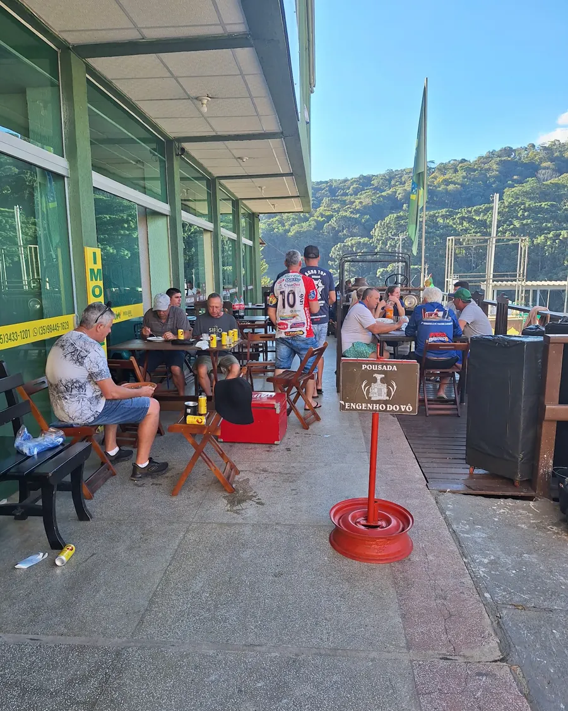
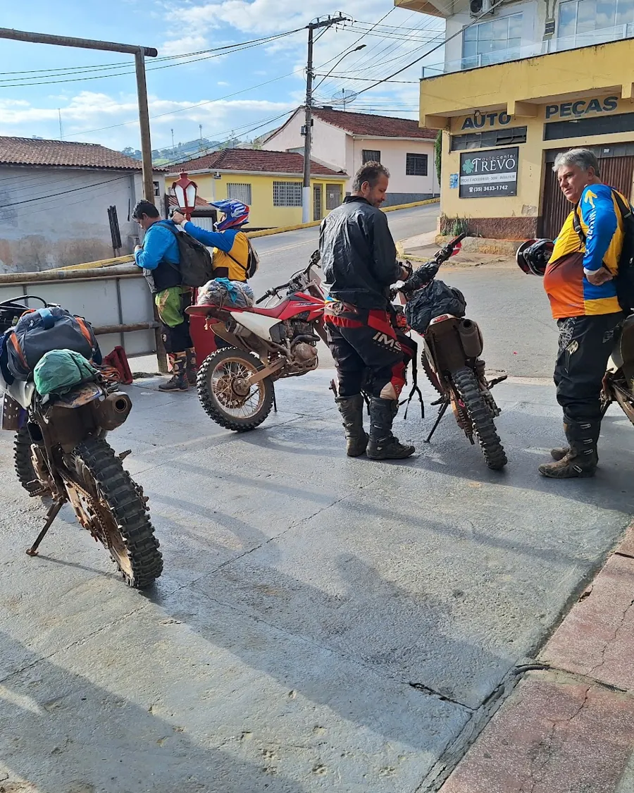
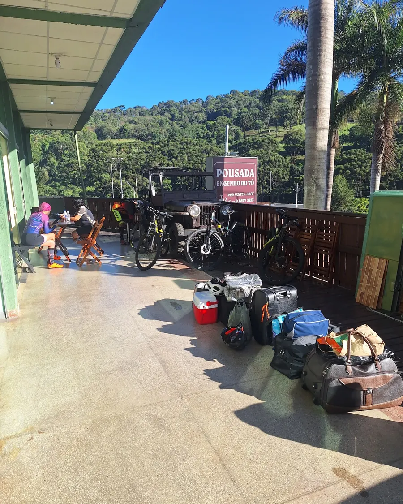
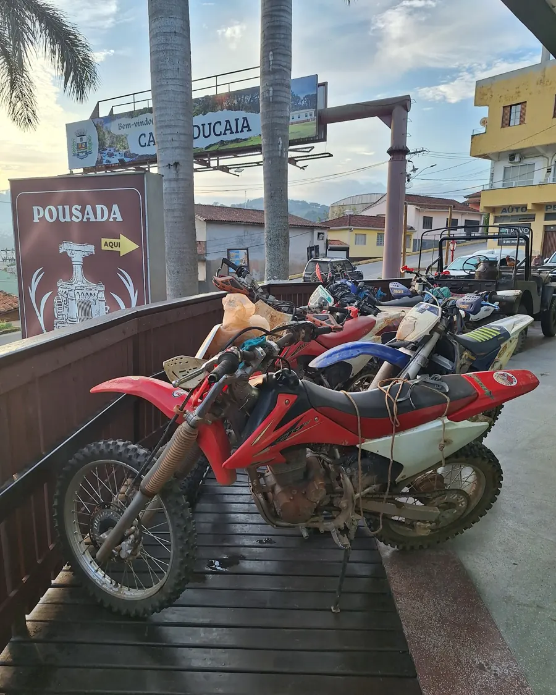
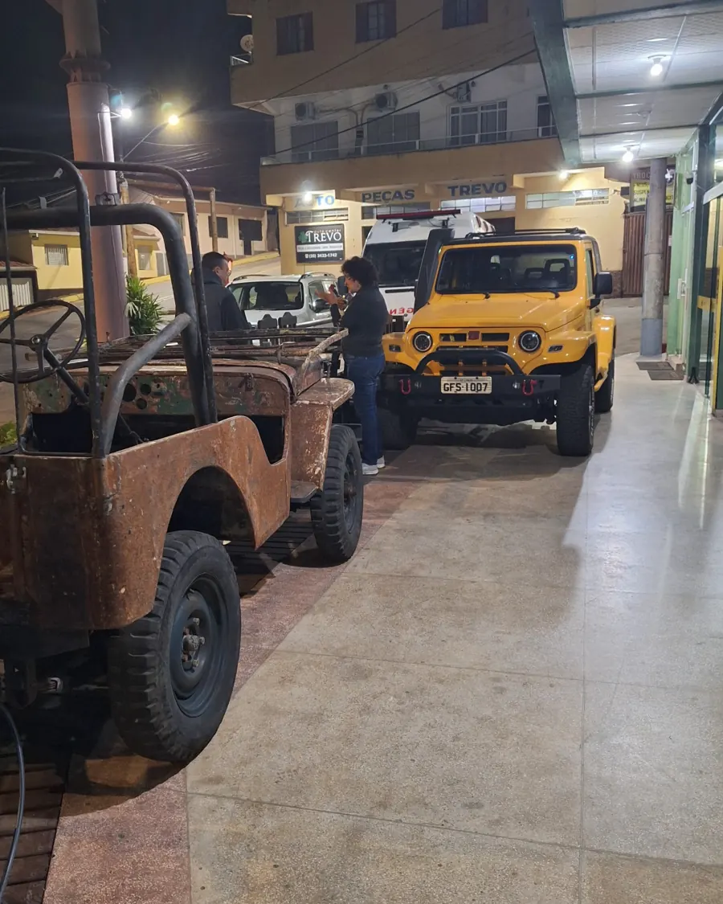
Camanducaia fica no Sul de Minas, na Serra da Mantiqueira, à beira da Fernão Dias. Monte Verde, que é distrito da cidade, fica a uns 30 km da pousada.
Arraste para os lados para ver o mapa inteiro.
A pousada fica no trevo de entrada da cidade. Quem vem de São Paulo chega em umas duas horas; de Belo Horizonte, em umas seis.
São uns 55 minutos de carro pela serra. Também há ônibus saindo da praça do Banco Santander, no centro de Camanducaia; confira os horários antes.
Fazenda centenária em Jaguary de Cima, no km 20 da estrada para Sapucaí-Mirim, com museu, piscinas naturais, trilhas leves e comida no fogão a lenha. Confirme o funcionamento antes de ir.

Distrito de Camanducaia, a uns 30 km da pousada. Tem chalés, restaurantes de fondue, lojas de chocolate e muita araucária.
Foto: Rafael Vianna Croffi, CC BY 2.0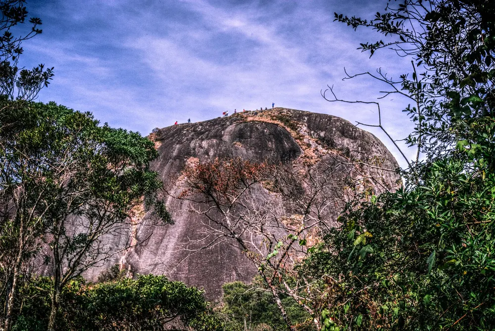
Trilha de mais ou menos uma hora, de nível moderado. Lá de cima se vê boa parte da serra.
Foto: Rafael Vianna Croffi, CC BY 2.0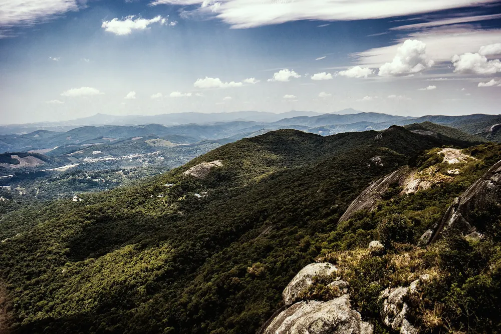
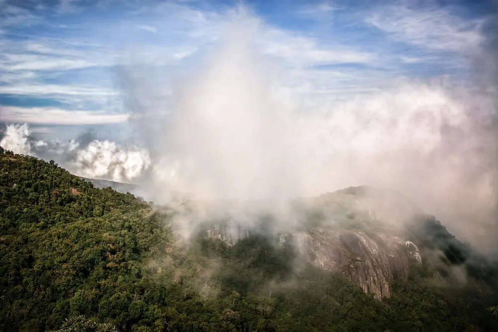
Mata atlântica e araucárias. Nas manhãs frias, a neblina fica parada nos vales.
Foto: Rafael Vianna Croffi, CC BY 2.0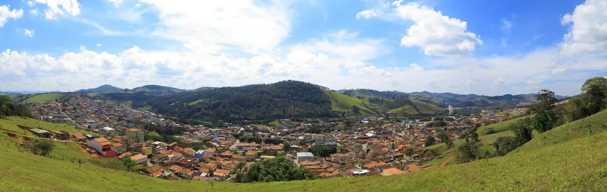
A cidade da pousada, no Sul de Minas, à beira da Fernão Dias.
Foto: Felipe Guimarães, CC BY 2.0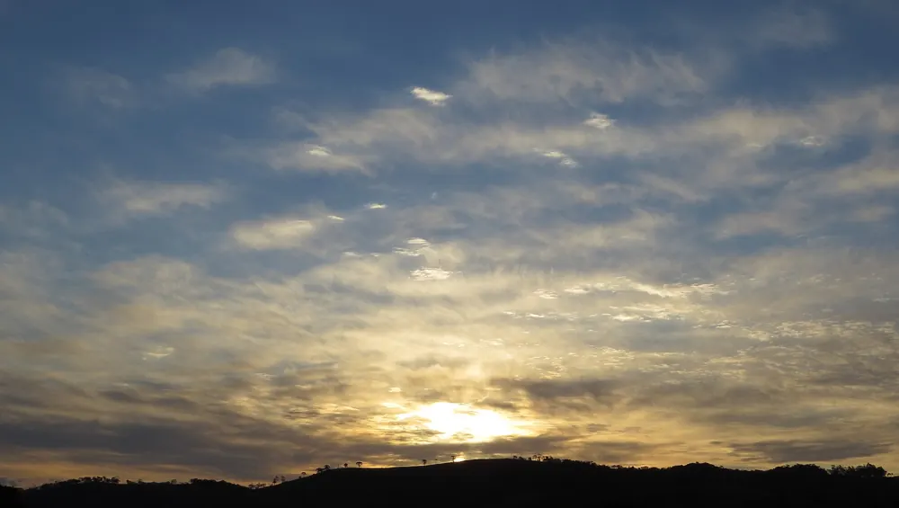
Conheça Camanducaia (4K)
CurioCidades · YouTube
Monte Verde visto de drone (4K)
Fernando Franchi · YouTube
Camanducaia, um destino na Serra da Mantiqueira
De fora em Juiz de Fora · YouTube
Entrada e saída ao meio-dia. A porta da rua fecha às 22h, e você recebe a chave na chegada para entrar e sair quando quiser.
Nas suítes, sim. Nos quartos com banheiro compartilhado, o café da manhã custa R$ 20 por pessoa.
Na frente da pousada há um pátio com vagas livres para carro. Bicicletas e motos podem ficar na varanda.
São 29 km pela serra, mais ou menos 55 minutos de carro. Também há ônibus saindo da praça do Banco Santander, no centro de Camanducaia.
Sim. Temos quartos com beliche para romeiros, excursões, trilheiros e jipeiros. Combine as datas e o número de pessoas pelo WhatsApp.
Crianças até 5 anos não pagam. A partir dos 6 anos, pagam a diária.
Escolha as datas no site e toque em Quero alugar!: a mensagem vai pronta para o nosso WhatsApp. Se preferir garantir com cartão de crédito, reserve pelo Booking.com.
Sim, Wi-Fi grátis em toda a pousada.
Rua Artur Silva Bernardes, 14, Centro, Camanducaia - MG
Na saída da Fernão Dias (BR-381). São uns 130 km de São Paulo e 30 km de Monte Verde.